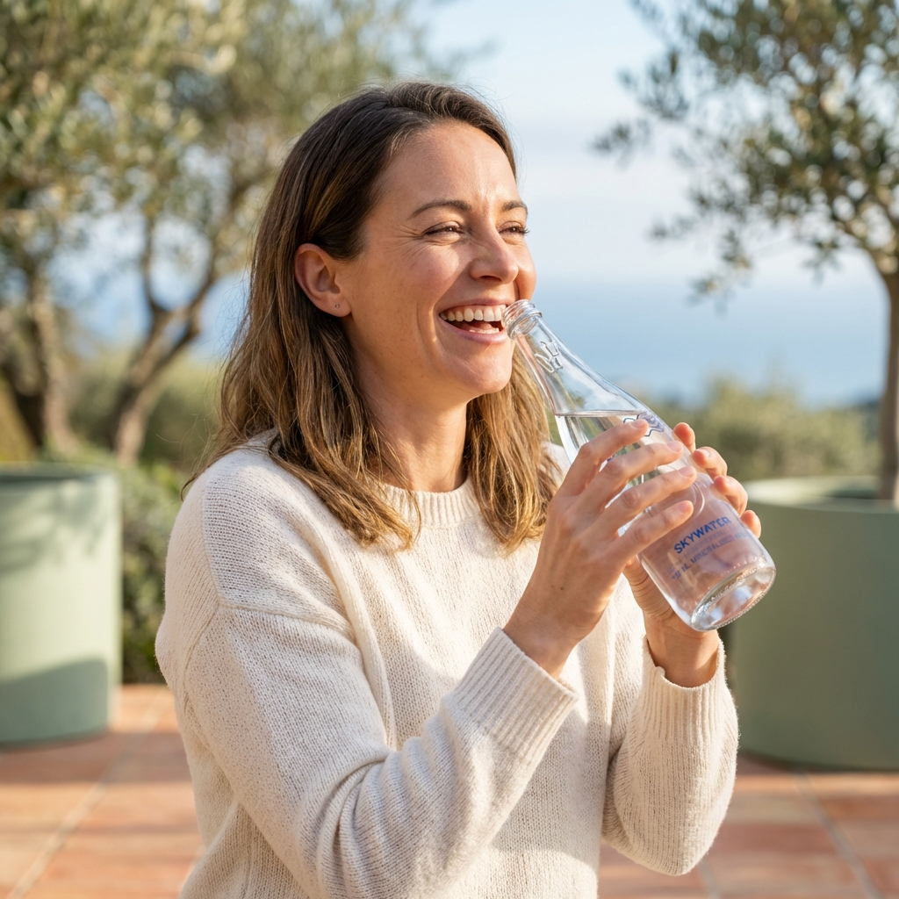
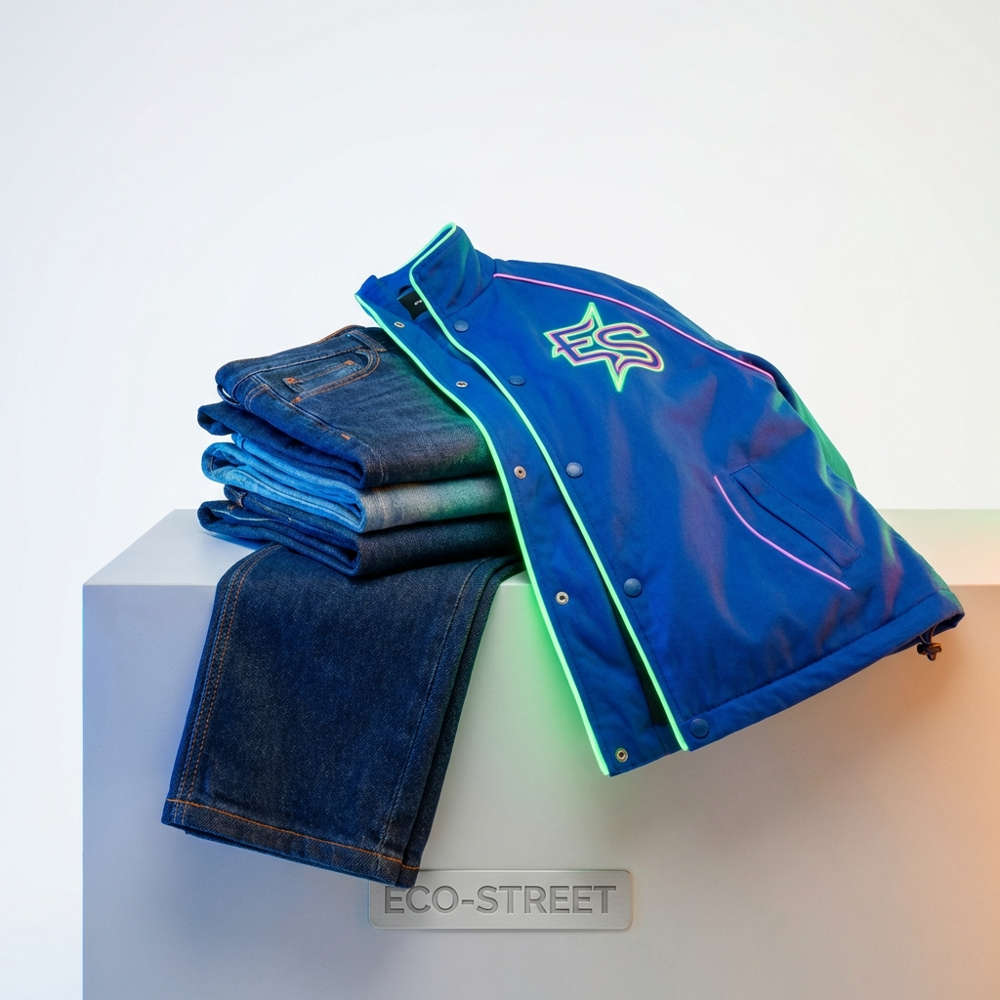
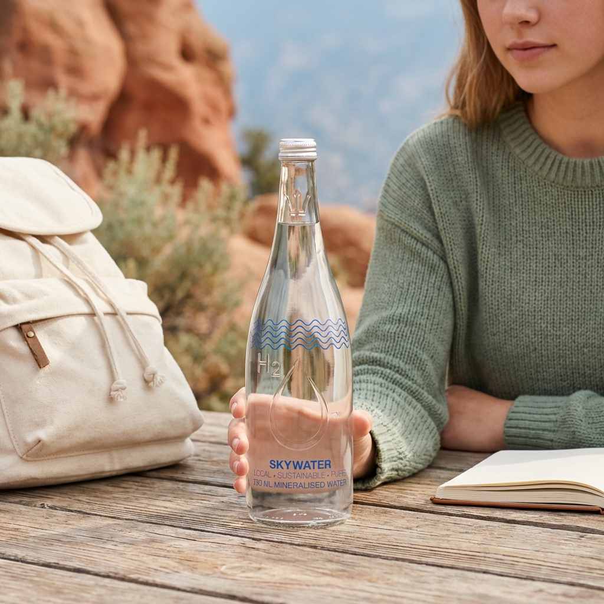
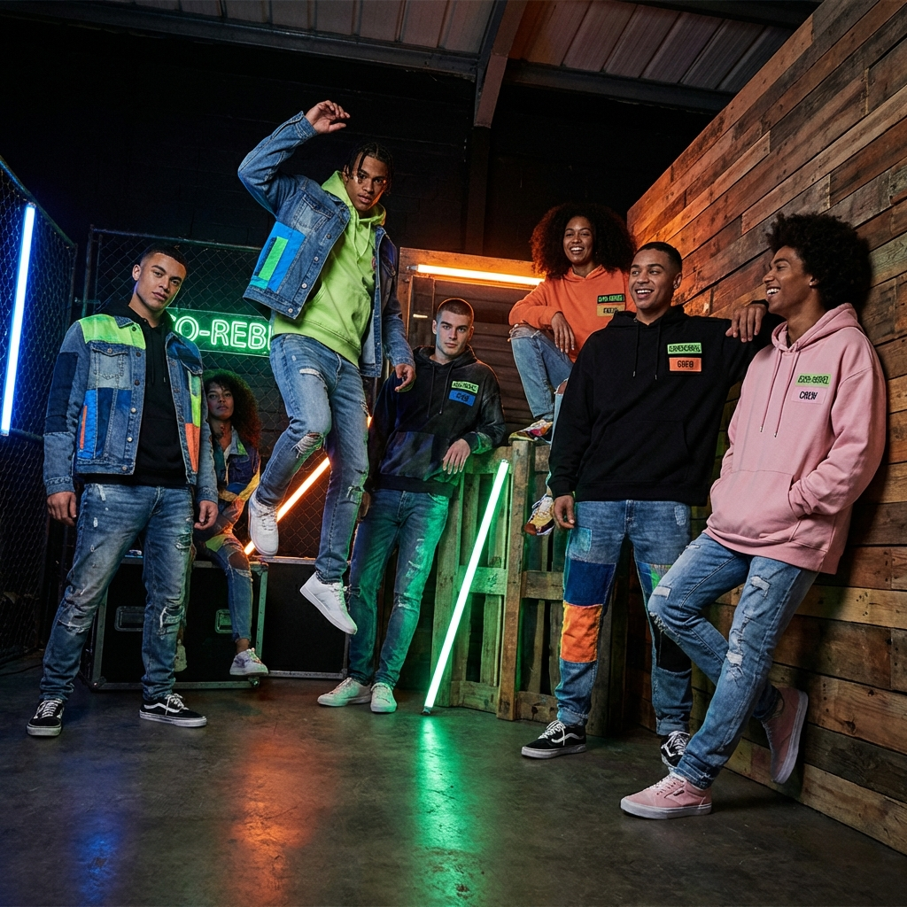

👤 User Depicting

Tile 1: Authentic
Style: lifestyle
Provider: gemini_img2img
Prompt: Professional lifestyle photograph: person from target demographic actively using a water bottle, holding it and drinking...
📦 Product Focus

Tile 2: Premium
Style: product photography
Provider: gemini_img2img
Prompt: Professional product photography: water bottle close-up hero shot, premium quality visible, clean white background or mi...
📦 Product Focus

Tile 3: Aspirational
Style: editorial
Provider: gemini_img2img
Prompt: Professional commercial photograph: water bottle placed in beautiful lifestyle setting related to Gen Z (ages 16-26), na...
📦 Product Focus

Tile 4: Creative
Style: cinematic
Provider: gemini_img2img
Prompt: Creative commercial photograph: water bottle from unique angle, artistic composition, energetic yet grounded, friendly a...